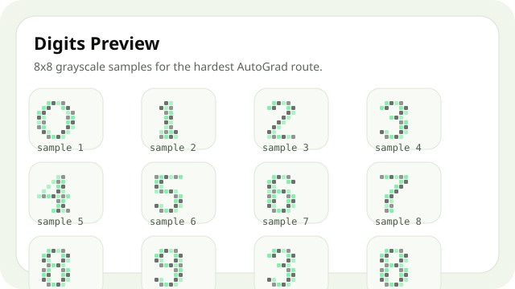

Level 1
Banknote Authentication
Направете binary classifier и сравнете поне raw срещу normalized вход.
dataset_notes.md, baseline.md, experiments/, mistakes.md.
Визуална посока за hardest route: 8x8 digit classification.
Level 1
Направете binary classifier и сравнете поне raw срещу normalized вход.
Level 2
Направете multiclass classifier и сравнете поне 2 различни architecture идеи.
Level 3
Работите с 8x8 digits и тествате hidden sizes, learning rate и preprocessing.